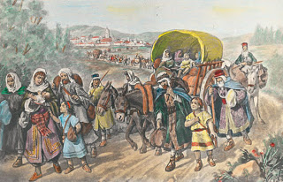

La Grande Mosquée de Testour est une mosquée tunisienne située à Testour, au Nord-Ouest du pays.
Fondée au début du xviie siècle et résultant d'une synthèse inédite entre les traditions locales
ifriqiyennes et les techniques décoratives et architecturales hispano-mauresques1, elle est l'un des
exemples les plus remarquables de l'art morisque en Tunisie.
Testour est une ville du Nord-Ouest de la Tunisie, située à 77 kilomètres au sud-ouest de Tunis.
Rattachée au gouvernorat de Béja, elle constitue une municipalité de 13 331 habitants en 20142 et
constitue le chef-lieu d'une délégation.
La ville se trouve sur le territoire de la tribu berbère des Béjaoua.
En Tunisie, outre que la Zlabia, la Samsa et les Qtayefs, la Bouza a une place de choix dans les
soirées ramadanesques. Son origine remonte à l'arrivée des andalous à notre Tunisie. Cette crème est
trés appréciée en Tunisie
Ibn Khaldoun né le 27 mai 1332 à Tunis et mort le 17 mars 1406 au Caire, Issu d'une grande famille
andalouse ,est un historien, économiste, géographe, démographe, précurseur de la sociologie et homme
d'État d'origine arabe
Les Morisques En Tunisie!

Avec l’expulsion de 1609, ce fut l’arrivée en masse2 (près de 80 000, dit-on) en Ifriqiya (Tunisie). Il
semblerait que la plupart des morisques qui s’installèrent en Tunisie à cette époque-là étaient soit des
Aragonais, soit des gens de la Castille septentrionale (Tolède et ses environs), avec quelques groupes de
Valenciens3.
Les morisques arrivèrent en Tunisie durant une période de grande instabilité politique, accentuée par des
révoltes des tribus arabes de l’intérieur, les guerres avec la Régence d’Alger en 1613 et 1628, des accrochages
avec les chrétiens sur la côte (incendie de la flotte tunisienne devant la Goulette en 1609), et des pestes
importantes (1604-1605, 1620-1621, 1642-1644).
Cette arrivée massive commença à partir des dernières années du règne d’Othman Bey (1595-1610) et se poursuivit
dans les premières années de Youssef Bey (1610-1637). L’accueil et la bienveillance manifestés par les Beys de
Tunis vis-à-vis des morisques étaient dus à la tragédie dont ils étaient victimes, mais aussi à une exigence
politique d’un poids non négligeable. En effet, les gouvernants de Tunis voyaient en cette population non
seulement une alliée de première importance pour la colonisation des terres de l’intérieur du pays restées sous
l’influence des tribus insurgées, mais, par cet acte, ils s’assuraient aussi du soutien des Turcs, qui
manifestaient une affection toute particulière pour la cause morisque, et ils consolidaient ainsi leur pouvoir,
spécialement contre les Deys d’Alger. C’était en quelque sorte une forme d’alliance avec l’Empire turc, principale
puissance protectrice et stabilisante de la majorité des royaumes musulmans à cette époque-là.
Othman Bey et, par la suite, Yussuf Bey furent donc satisfaits de recevoir en nombre important une population
qui leur serait reconnaissante et qui, de plus, avait de bonnes relations avec les Ottomans. Il est incontestable
que la venue des morisques favorisait la politique des Beys et confortait leur position, outre le fait que, si
certains purent apporter un pécule, la grande majorité venait avec une autre richesse, bien plus grande, celle du
savoir-faire et des connaissances. Et les morisques étaient riches de ce point de vue, puisqu’ils étaient experts
en agriculture, en architecture et construction, en toutes sortes de métiers de l’artisanat, et possédaient même
des connaissances importantes en techniques militaires4.
L’établissement des morisques en Tunisie eut lieu tout d’abord dans la capitale et dans les lieux les plus
fertiles de ses environs. Ultérieurement, il y eut une migration le long du cours le la rivière Medjerda, soit
pour fonder de nouveaux établissements, augmenter la population des villes et des villages déjà existants, ou
encore pour vivifier d’anciens noyaux sédentaires alors abandonnés. Cependant, l’essentiel de cette implantation
resta concentré géographiquement au niveau du nord de la Tunisie. Les écrits des historiens et les récits des
voyageurs donnent les trois régions principales dans lesquelles il est possible de signaler un nombre de localités
dont la population était totalement ou partiellement morisque, à savoir : la péninsule du Cap Bon, la vallée de la
Medjerda et le Sahel bizertin.
Cette disposition de la population morisque à travers le nord tunisien peut s’expliquer – en dehors de la
volonté politique exprimée par les Beys de l’époque – par l’activité économique de ces nouveaux arrivants. En
effet, dans leur grande majorité, les morisques étaient des agriculteurs, initiés depuis longtemps au travail de
la terre et aux techniques agricoles. Il est important de rappeler qu’en Espagne les morisques devaient se
restreindre à une certaine catégorie de métiers, le plus souvent répartis entre les secteurs primaire
(agriculture) et secondaire (travail de l’argile, l’artisanat de la construction, etc.)5. Hans-Joachim Kress6 note
dans ce sens que : « dans les territoires dont le Nord constituait le centre de gravité, les données climatiques
et aussi en partie les données édaphiques (les sols), qui étaient tout à fait analogues à celles de maintes
régions d’où ils étaient originaires en Ibérie, ne préparaient pas de grosses difficultés aux colons morisques».

.jpg)